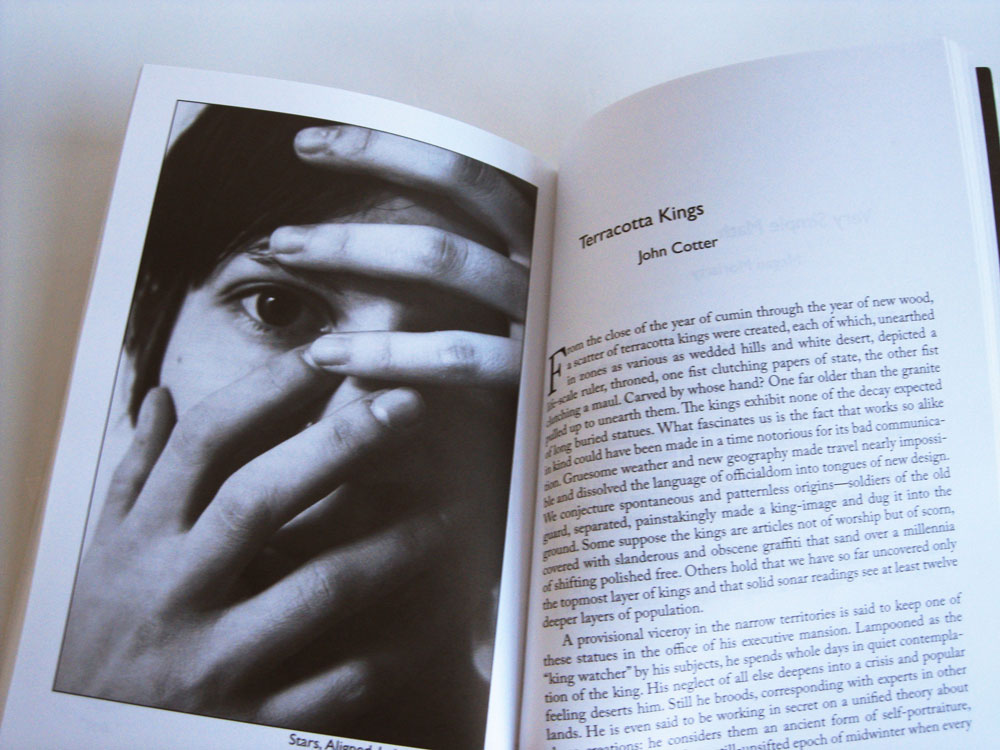

Redivider
Production editor at Redivider, literary magazine at Emerson College, 2011–2012
Redivider is the graduate-run biannual literary magazine at Emerson College. I was production editor, leading the design and production of the journal. My team and I designed and laid out the cover and pages for the books.
Additionally, I redesigned the logo for Redivider.

 Using the end of the R’s ears as the dots, I completed the division symbol with a bar pulled from the typeface’s division symbol
Using the end of the R’s ears as the dots, I completed the division symbol with a bar pulled from the typeface’s division symbol
